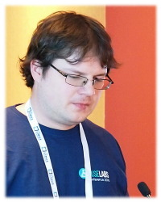

Proactive compaction
The scheme he has in mind involves doing compaction in the background, outside of the context of any specific process. The kswapd thread would be woken from the memory-allocation slow path, and would be expected to reclaim a certain number of single pages. It would then wake the separate kcompactd thread with a desired size for the higher-order pages. This thread would do compaction until a page of the desired order is available, or until the entire memory zone has been scanned. That may not be enough, though, since, at the end, it will have created only a single higher-order page.
He asked the crowd for ideas on how to make this scheme better. Michal
Hocko suggested adding a configuration option; the administrator could set
a watermark and a time period. The compaction thread would then check each
period and try to ensure that the desired number of pages are available.
But Babka objected that this behavior doesn't really seem like something

What would be the inputs to an auto-tuning solution? The first would be recent demand for pages of each order. Even better would be future demand, of course, but, in its absence, the best that can be done is to assume that future behavior will not differ too much from the recent past. It might also be desirable to track the importance of each request; transparent huge pages are an opportunistic optimization, while higher-order pages for the SLUB allocator can be hard to do without. The other useful input would be the success rate of recent compaction attempts; if compaction isn't working, there is no point in continuing to try it. Mel Gorman suggested also tracking the number of compaction requests that come in while the compaction itself is running.
Andrea Arcangeli pointed out that it will be necessary to protect large pages created by compaction from normal allocation requests. Otherwise, the kernel might work to put together a higher-order page, only to have it immediately broken up again in response to a single-page allocation. When compaction is done directly from an allocation request this problem does not arise, since the resulting large page would be used right away. The proactive approach is promising, he said, but the protection problem needs to be addressed for it to work.
The proactive compaction feature is a work in progress, Babka said; an RFC patch was sent out recently. It tries to track the number of allocations that would have succeeded with more kcompactd activity. Essentially, those are situations where there are enough free pages in the system, but they are too fragmented to use. The patches are not currently tracking the importance of allocation requests; perhaps the GFP flags could be used for that purpose. There is also no long-term averaging of demand. For now, it simply runs until there are enough high-order pages available.
One remaining problem is evaluating the value of this work. The existing artificial benchmarks, he said, are reaching their limits in this area.
Concerns were raised that background compaction might increase a system's power usage. Hocko said that this kind of worry was why he had suggested a configuration knob for this feature. Babka replied that power consumption should not be a big problem; compaction responds to actual demand on the system, so it should not be active when the system is otherwise mostly idle.
As the session came to a close, Arcangeli suggested that perhaps subsystems
with large-page needs could register with the compaction code and indicate
how many pages they would like to have available. Babka said that he would
like to go as far as he can without the addition of any sort of tuning
knobs, though. Johannes Weiner said there would be value in an on/off
switch, since any sort of proactive work risks wasting resources in some
environments. Any more tuning than that should be avoided, though, he
said. It was generally agreed that this feature looked valuable, but that
it should start as simple as possible with the idea that more complexity
could be added later if needed.
| Index entries for this article | |
|---|---|
| Kernel | Memory management/Large allocations |
| Conference | Storage, Filesystem, and Memory-Management Summit/2017 |